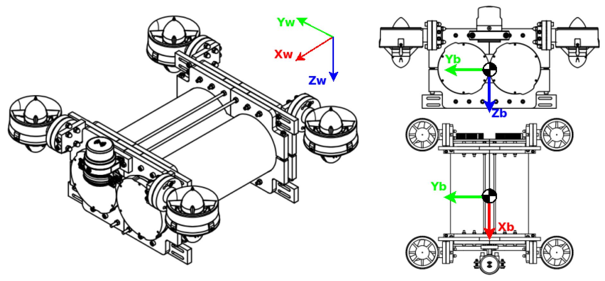
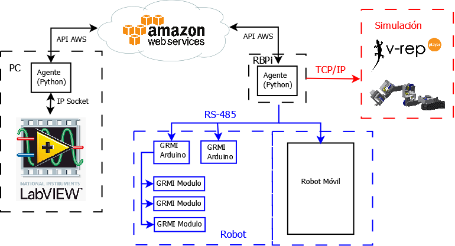

Juan S. Cely G.
js.cely@upm.esCenter for Automation and Robotics
Escuela Técnica Superior de Ingenieros Industriales de Madrid - UPM
Calle José Gutiérrez Abascal 2 28006, Madrid, Spain
 I am a Researcher at Center for Automation and Robotics.
My research interests lie on Geometric Control for robots navigation, Dynamics of Underwater and Aerial robots and Underactuated Robotics.
I am a Researcher at Center for Automation and Robotics.
My research interests lie on Geometric Control for robots navigation, Dynamics of Underwater and Aerial robots and Underactuated Robotics.I am pursuing my Ph.D at Universidad Politécnica de Madrid into the Robots & Intelligent Machines Group. I completed a Master degree in Automation and Robotic at the Universidad Politécnica de Madrid and a Bachelor of Engineering degree at the Universidad Militar Nueva Granada.
Google Scholar
/ ORCid
 Diseño y Simulación de una plataforma móvil auto-balanceada de dos ruedas para el transporte de una persona promedio
Diseño y Simulación de una plataforma móvil auto-balanceada de dos ruedas para el transporte de una persona promedio
Juan S. Cely G.
Universidad Militar Nueva Granada (UMNG Repository) 2015.
PDF
Last Publications
2019

Experimental and Computational Methodology for the Determination of Hydrodynamic Coefficients Based on Free Decay Test: Application to Conception and Control of Underwater Robots
Juan S. Cely, Roque Saltaren, Gerardo Portilla, Oz Yakrangi, Alejandro Rodriguez-Barroso
Sensors 2019, 19(17), 3631
Publication Page
Juan S. Cely, Roque Saltaren, Gerardo Portilla, Oz Yakrangi, Alejandro Rodriguez-Barroso
Sensors 2019, 19(17), 3631
Publication Page
Projects
2017

Diseño e Implementacion de la arquitectura interna de un robot submarino modular para tareas de manipulacion bajo el agua
Juan S. Cely G., Roque Saltaren.
Universidad Politenica de Madrid (Open Access UPM) 2017.
2015
Juan S. Cely G., Roque Saltaren.
Universidad Politenica de Madrid (Open Access UPM) 2017.
Diseño y Simulación de una plataforma móvil auto-balanceada de dos ruedas para el transporte de una persona promedioJuan S. Cely G.
Universidad Militar Nueva Granada (UMNG Repository) 2015.
Education
- 2017– In progress:
Ph.D. in Automation and Robotics, CAR UPM-CSIC, Universidad Politecnica de Madrid, Spain
Topic: "Geometric Algebra for control and navigation of underwater robots"
- 2016–2017:
Master of Science in Automation and Robotics, CAR UPM-CSIC, Universidad Politecnica de Madrid, Spain
Master thesis: "Design and Implementation of the Internal architecture of an modular robot for underwater grasping tasks."
Courses: Dynamic and Control of Robots, Robots Kinematics, Design of Robots, Guided and Navigation of Robots.
- 2008–2015:
Bachelor of Mechatronics Engineering, Davinci Research Group, Universidad Militar Nueva Granada, Colombia
Thesis: "Design and Simulation of a self balancing mobile platform for the transport of an average person."
Courses: Mechatronics Systems Models, Linear Control, Robotics, Advanced Topics of Control, Mechatronic Design, Artificial Intelligence.
Code
- UDrobot: Mobile Underwater Robot (MUR): Differents packages for simulation and control a Modular Underwater Robot design by Robotics and Intelligent Machines Research Group.
- GRMI_underwater_drone: A modular, fully and light library for connecting GRMI's robots to internet using AWS (Amazon Web Service), typed in Python and Arduino.
Talks, Shows & Tutorials
- Mobile Robotic Platform with Remote Control Using AWS, Center for Automation and Robotics UPM-CSIC, 2017.
- Position control of Brushless Motor, Center for Automation and Robotics UPM-CSIC, 2017.
- GEAR REDUCTION FOR MOTOR Underwater prototype, Center for Automation and Robotics UPM-CSIC, 2017.
May the force be with you . . .

Thank You Mario, But Our Princess is in Another Castle.

Yes, Yes, Yes.